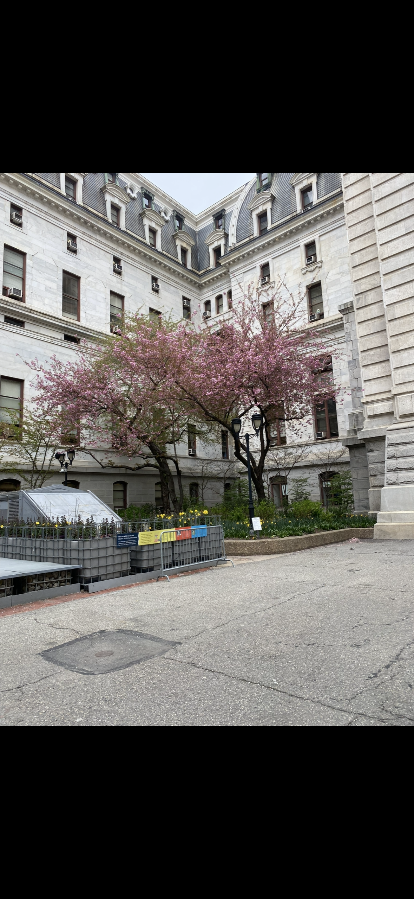
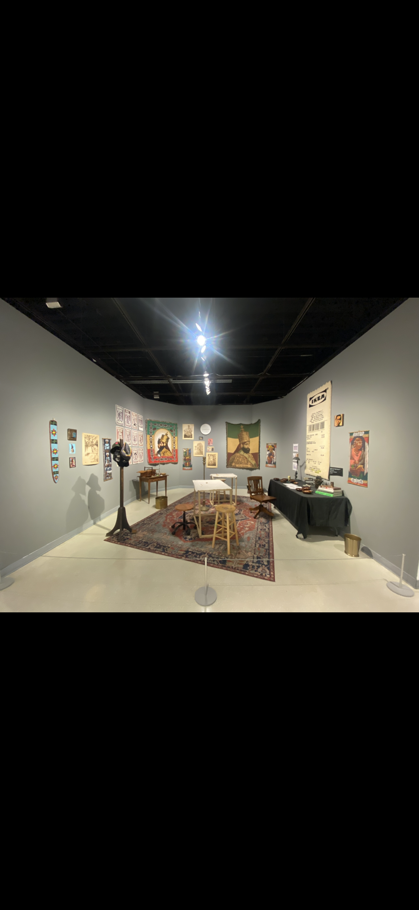
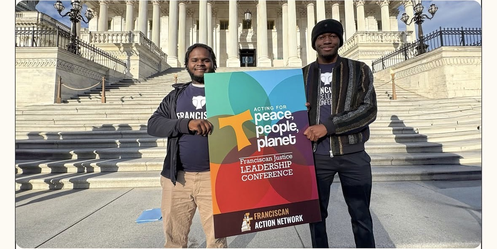
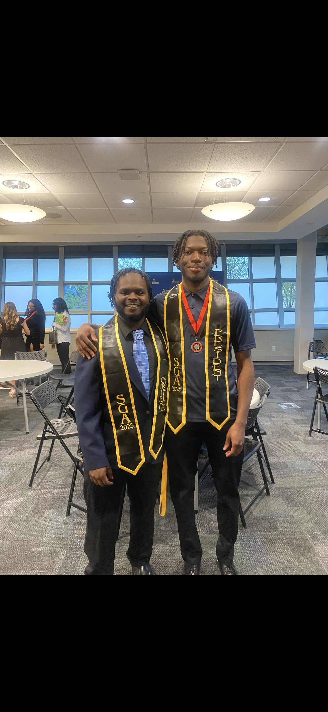

Community Service
Volunteer experiences including food-bank and soup-kitchen efforts, park cleanups, and university community service.
PHILADELPHIA • LEADERSHIP • PUBLIC SERVICE
I'm Kyheem Jones. I'm running with a focus on developing and investing in Philadelphia— strengthening our schools, expanding opportunities for young people, rebuilding our neighborhoods, keeping our city clean, and putting the needs of our communities first.
Philadelphia deserves investment that reaches every neighborhood, every school, and every generation.
OUR CITY. OUR FUTURE.
Philadelphia is home. The goal is to develop and invest in the city so that neighborhoods are cleaner, schools are stronger, young people have more opportunities, and communities have the resources to grow.
Make strong public education a central investment in Philadelphia's future.
Expand programs, pathways, mentorship, recreation, and opportunities for young people.
Prioritize cleaner streets, public spaces, neighborhoods, and stronger city services.
Invest in neighborhoods, infrastructure, local businesses, and places where people live.


The vision is straightforward: Philadelphia should invest in the foundations that make a city work. That means schools that prepare students, youth programs that create opportunity, neighborhoods that are maintained and rebuilt, and city services that residents can depend on.
Development should strengthen communities rather than leave them behind. Public resources should be directed toward long-term improvements that make Philadelphia a better place to learn, work, live, and build.
I'm a Philadelphia native and Political Science graduate of Neumann University. My path has been shaped by education, leadership, advocacy, community engagement, and service.
I believe public leadership requires preparation, accountability, communication, and a willingness to listen. My goal is to bring those principles into a career centered on making a difference in Philadelphia.
This campaign is about the future I believe Philadelphia can build through focused investment and responsible leadership.
Public service means showing up for the community, contributing where needed, and building experience that can be carried into public leadership.

Volunteer experiences including food-bank and soup-kitchen efforts, park cleanups, and university community service.
Experience supporting students, young people, campus communities, and opportunities for engagement.
Participation in advocacy and public-policy conversations, including AICUP Day on the Hill and student representation.
A commitment to listening, inclusion, opportunity, accountability, and practical community-focused work.
Leadership is about showing up, taking responsibility, and learning how to serve the people you represent.

Served in Neumann University Student Government and developed experience representing students and supporting campus governance.
Served as Chief Justice within Neumann University Student Government, supporting student election proceedings and the electoral process.
Worked to amplify student voices, communicate with candidates, and connect students with campus decision-making and engagement.
Built practical leadership skills through organizing, communication, public speaking, service, and community engagement.
Philadelphia's future should be built with purpose, investment, and the needs of its communities at the center.